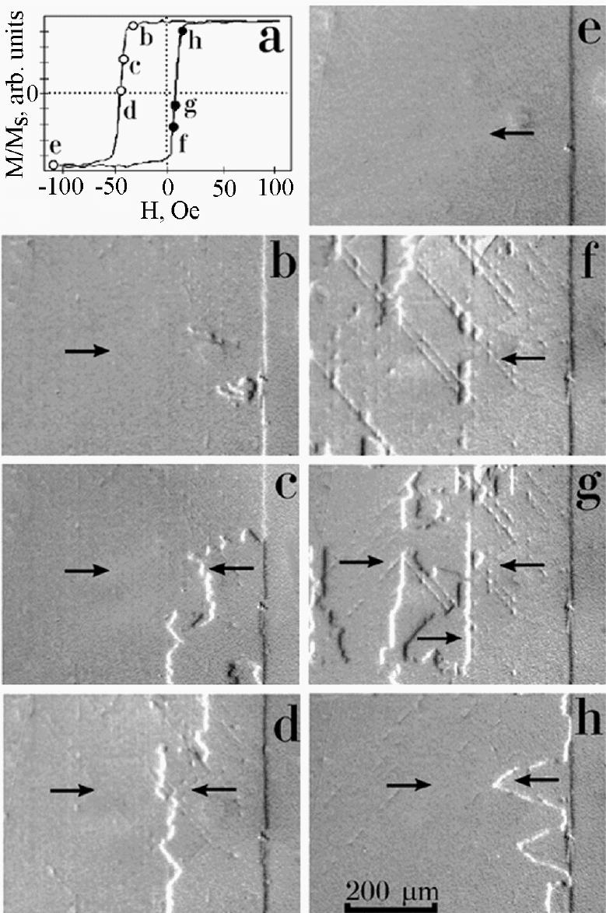

Figure 2:Magnetic hysteresis loop (a) and
MOIF images of domain structure (b - f) taken at the
unidirectional-axis magnetization reversal of NiO/NiFe
bilayer. Figs. b to h correspond to the conditions indicated
by the circles labelled by the same letters on the hysteresis
loop in Fig. 2a. The vertical right-hand band perpendicular
to the unidirectional axis is the edge of the bilayer,
revealed due to magnetic stray fields. Arrows indicate
magnetization directions in domains.